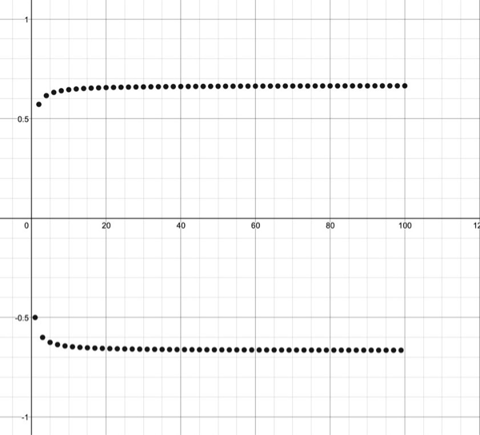

In this document, you’ll find three different examples of finding the limit superior (\(\limsup\)) and limit inferior (\(\liminf\)) of a sequence, with different methods used in each case.
Solution Firstly, note that we can rewrite each \(a_n\) as \[a_n = (-1)^n \frac{2}{3}\frac{1}{\frac{1}{3n} + 1}.\] Splitting into odd and even cases, we obtain \[a_n = \begin{cases} \frac{2}{3}\frac{1}{\frac{1}{3n} + 1} &\quad \text{for $n$ even},\\ \frac{2}{3}\frac{-1}{\frac{1}{3n} + 1} &\quad \text{for $n$ odd}.\end{cases}\] Note that for \(j \in \mathbb{N}\), \(a_{2j-1} \leq 0 \leq a_{2j}\). Also note that \((a_{2j-1})_j\) is a decreasing sequence and \((a_{2j})_{j}\) is an increasing sequence [Try showing these!] Moreover, \(\lvert a_n \rvert \leq \frac{2}{3} \; \forall n\in\mathbb{N}\), so \((a_n)_n\) is bounded.
Now, fix \(k \in \mathbb{N}\). We have: \[\begin{align*} \sup_{k\geq n}a_n &= \sup_{2j \geq k} a_{2j}, \; \; &&\text{(since only even elements are non-negative.)}\\ &= \lim_{j \to \infty} a_{2j}, \; \; &&\text{(since $(a_{2j})_j$ is a bounded increasing sequence)},\\ &= \frac{2}{3}. \; \; \quad &&\text{(by algebra of limits)} \end{align*}\] Hence, taking \(k \to \infty\), we find that \(\sup_{n \geq k} a_n \to \frac{2}{3}\). So, \(\limsup_{n \to \infty} a_n = \frac{2}{3}\).
Similarly, fixing \(k \in \mathbb{N}\) again: \[\begin{align*} \inf_{k\geq n}a_n &= \inf_{2j \geq k} a_{2j-1}, \; \; &&\text{(since only odd elements are non-positive.)}\\ &= \lim_{j \to \infty} a_{2j-1}, \; \; &&\text{(since $(a_{2j-1})_j$ is a bounded decreasing sequence)},\\ &= \lim_{j \to \infty}-\frac{4-\frac{2}{j}}{6 - \frac{2}{j}}, \; \; \quad &&\text{(by sequence definition)}\\ &= -\frac{2}{3}. \; \; \quad &&\text{(by algebra of limits)}. \end{align*}\]
Hence, taking \(k \to \infty\), we find that \(\inf_{n \geq k} a_n \to -\frac{2}{3}\). So, \(\liminf_{n \to \infty} a_n = -\frac{2}{3}\).
In case you’re interested, the first 100 terms of the sequence \((a_n)_n\) looks like this:

Solution First, note that for any \(j\in\mathbb{N}\), \(a_{2j} \leq 2 \leq a_{2j-1}\). But this time, we find that both \((a_{2j})_j\) and \((a_{2j-1})_j\) are decreasing sequences! In this case, the argument used in Example 1 will only work for \(\liminf_{n\to\infty} a_n.\) Try using that argument to show that \[\liminf_{n\to\infty}a_n = 1.\] For \(\limsup_{n\to\infty} a_n\), we have to look towards the start of the sequence. To this end, fix \(k \in \mathbb{N}\). Then, \[\begin{align*} \sup_{n\geq k}a_n &= \sup_{2j-1 \geq k} a_{2j - 1} \; \; &&\text{(since only the odd elements are $\geq 2$)}\\ &=\begin{cases} a_k \; \text{if $k$ is odd},\\ a_{k+1} \; \text{if $k$ is even}\end{cases} \; \; &&\text{(because $(a_{2j-1})_j$ is a decreasing sequence)}\\ &=\begin{cases} \frac{1}{k^2} + 3 \; \text{if $k$ is odd},\\ \frac{1}{(k+1)^2} + 3 \; \text{if $k$ is even}\end{cases} \end{align*}\]
In both cases, as \(k \to \infty\), \(\sup_{n\geq k }a_n \to 3\), so \(\limsup_{n \to \infty} a_n = 3\).
Note that this time, you can’t split \((a_n)_n\) up into two monotonic subsequences, so neither of the two methods in the previous examples work. So, we need to be crafty.
It’s always handy to have an idea of what the \(\liminf\) and \(\limsup\) might be. Since \(\left\lvert\cos\left(\frac{n\pi}{3}\right)\right\rvert \leq 1\) for all \(n \in \mathbb{N}\), and \(\frac{(-1)^n}{n} \to 0\) as \(n \to \infty\), we (hopefully) would guess that \[\liminf_{n\to\infty}a_n = -1, \quad \text{and} \quad \limsup_{n \to \infty} a_n = -1.\] So how do we go about showing these?
Solution Firstly, recall that the \(\limsup\) is the largest limit of any subsequence of \((a_n)_n\). Take \(n_j = 6j\), then \[a_{n_j} = \cos\left(\frac{6j\pi}{3}\right) + \frac{(-1)^{6j}}{6j} = 1 + \frac{1}{6j} \to 1, \; \text{as} \; j \to \infty.\]
So, \(\lim_{j \to \infty} a_{n_j} = 1\), hence \(\limsup_{n \to \infty} a_n \geq 1\).
To show that \(\limsup_{n \to \infty} a_n \leq 1\), recall that for sequences \((b_n)_n\) and \((c_n)_n\), \[\limsup_{n \to \infty}(b_n + c_n) \leq \limsup_{n \to \infty}b_n + \limsup_{n \to \infty}c_n.\] Taking \[b_n = \cos\left(\frac{n\pi}{3}\right), \; \text{and} \; c_n = \frac{(-1)^n}{n},\] we have that \[\limsup_{n \to \infty} b_n = 1, \; \text{and}\] \[\limsup_{n \to \infty} c_n = 0 \quad \text{(as $(c_n)_n$ converges to $0$)}.\] Hence, \[\limsup_{n \to \infty} a_n = \limsup_{n \to \infty}(b_n + c_n) \leq 1 + 0 = 1.\]
Combining the two inequalities we have found allows us to conclude that \(\limsup_{n \to \infty} a_n = 1.\)
Have a go at proving that \(\liminf_{n \to \infty} a_n = -1\). You’ll need: